Layout e navegação Angular
A02 · v4.0.0-alpha.2 · 15/11/2026 · Tela 66 em /configuracoes/conta.
O cabeçalho fica montado enquanto Início e Conta ocupam a área central. A barra lateral recolhe no desktop. No celular, a barra inferior contém Mais. A A01 só tinha a interface de Conta, sem o menu Mais ou o Início provisório.
Dados da conta abre pelo botão de mesmo nome com sessão autenticada. Todos os seus caminhos abre pelo botão Mais, disponível na prévia móvel. X, Escape e gesto externo fechado no próprio diálogo retornam o foco ao acionador. Escolher outro destino pelo menu leva o foco para o conteúdo aberto.
Capturas em Chromium com Supabase local. A Conta sem sessão usa o formulário de entrada provisório. Dados da conta usa usuário descartável e e-mail coberto. Os desenhos do Atlas representam a linha Next.js. As opções completas de cada módulo ficam para as etapas do plano.
Guia Migração · Registro da A02
Desktop a 1440 px
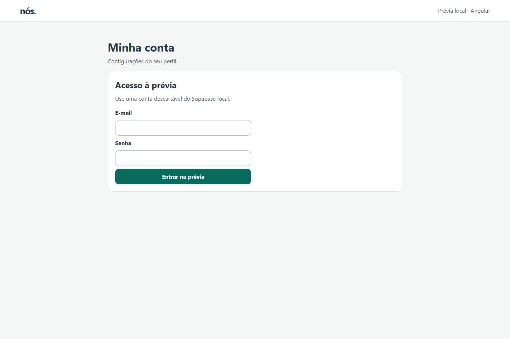
Conta na prévia A01
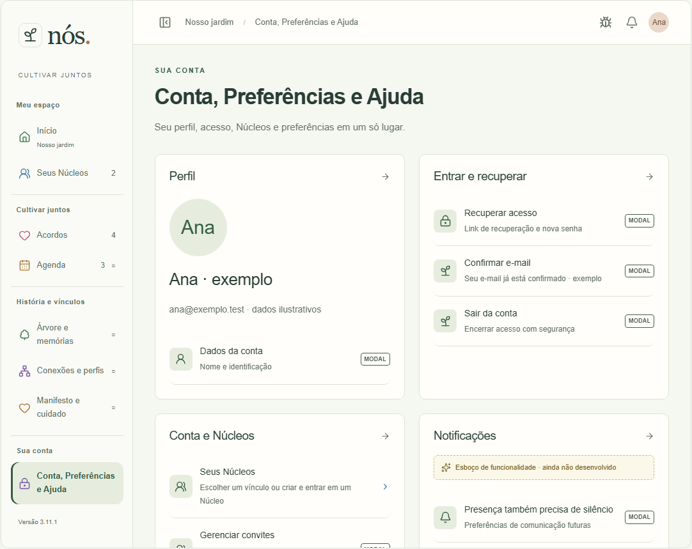
Tela 66 no Atlas vivo
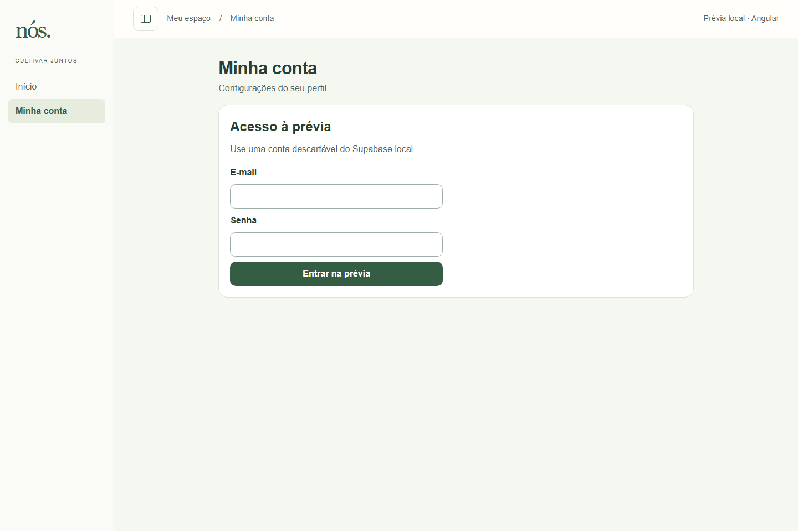
Conta na prévia A02
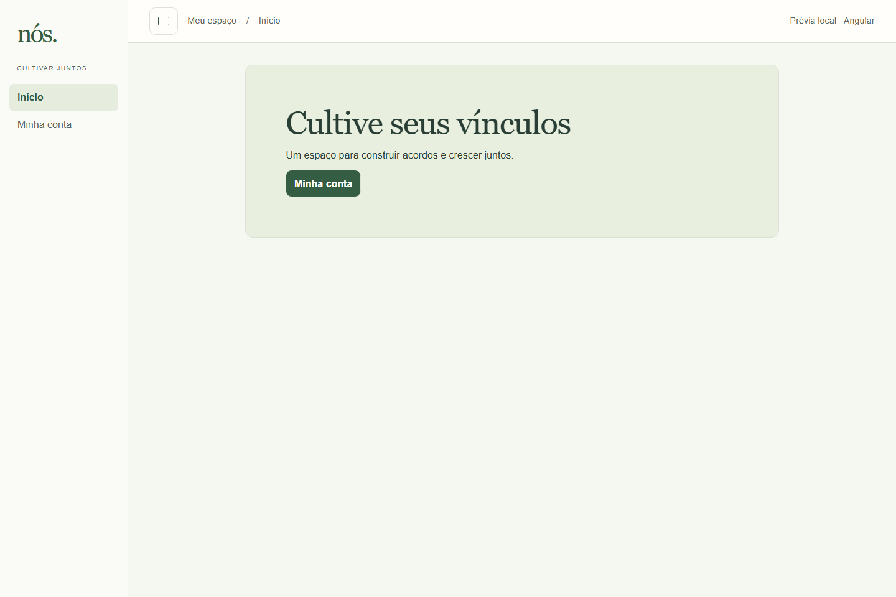
Início provisório da prévia A02
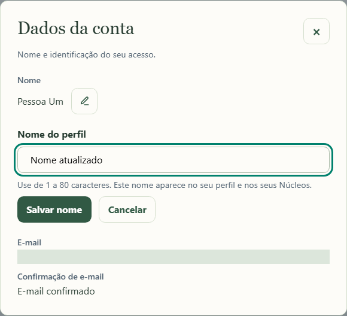
Dados da conta na prévia A01
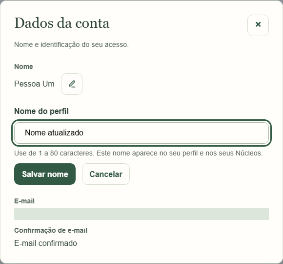
Dados da conta na prévia A02
Celular a 390 px
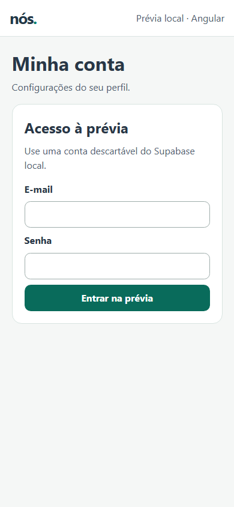
Conta na prévia A01
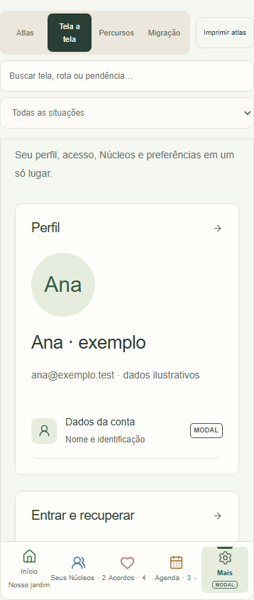
Tela 66 no Atlas vivo
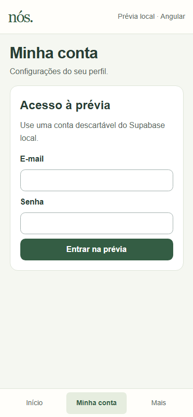
Conta na prévia A02
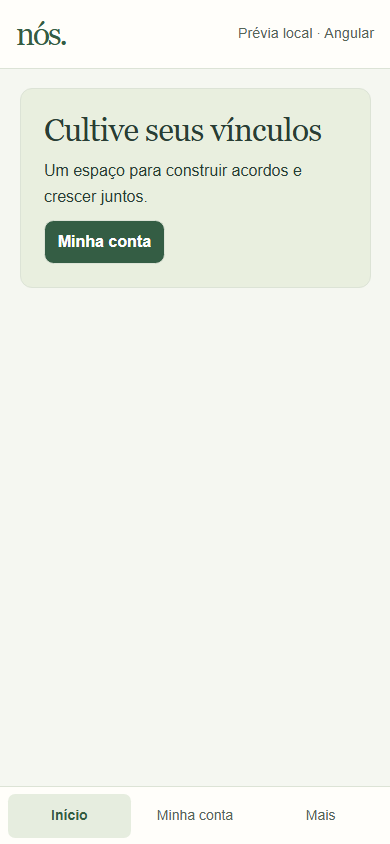
Início provisório da prévia A02
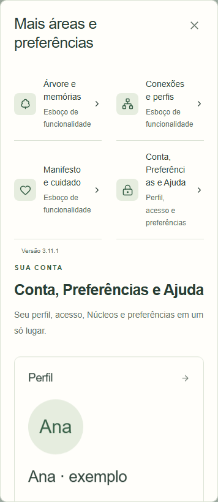
Mais no Atlas vivo
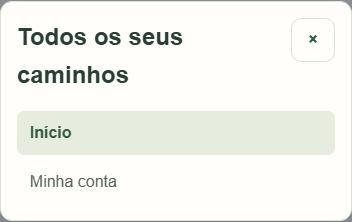
Todos os seus caminhos na prévia A02
 Dados da conta na prévia A01
Dados da conta na prévia A01
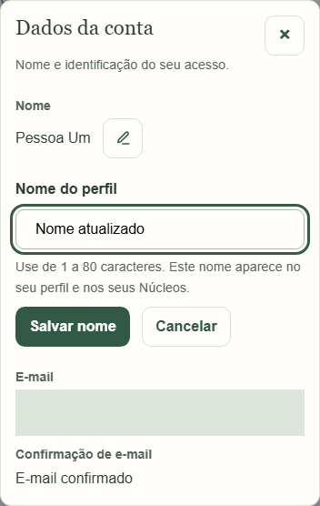
Dados da conta na prévia A02